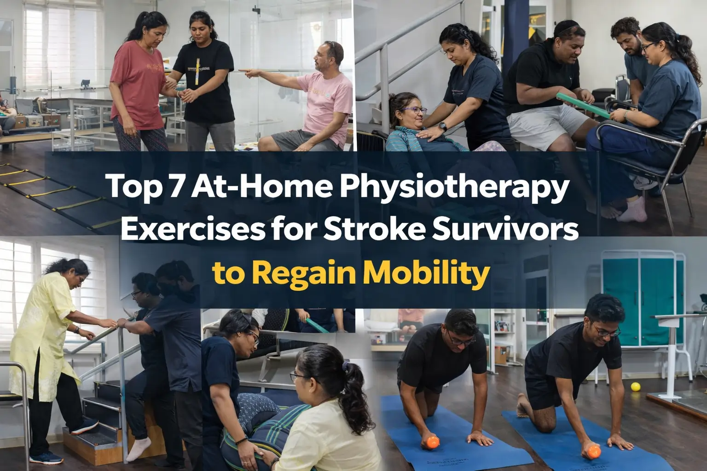

Top 7 At-Home Physiotherapy Exercises for Stroke Survivors to Regain Mobility


06
Fab

Dr. Amol Kathar
MPT (Neuro), 3.5+ years clinical
experience in neurological rehabilitation
Rajesh couldn't lift his chai cup. Three months had passed since his stroke, and this simple morning ritual felt impossible. His right hand just sat there, unresponsive, while his daughter Priya watched helplessly from the kitchen doorway. She'd taken him to the best neuro rehabilitation centre in Pune twice a week, but progress felt painfully slow.
Then his physiotherapist shared something that shifted everything. "Rajesh," she said, "you spend two hours weekly in our clinic. That's 166 hours at home doing nothing. Your brain doesn't heal during those two therapy hours. It heals during those 166 hours when you repeat movements over and over."
That conversation sparked a transformation. Priya learned seven simple exercises they could do at home. No fancy equipment. No complicated routines. Just consistent, daily practice. Six months later, Rajesh doesn't just hold his chai cup. He pours it, stirs it, savors it. His recovery happened at home, not just in the clinic.
Stroke rehabilitation is a journey where home exercises determine success more than clinical sessions ever could. Your brain needs hundreds of repetitions daily to rewire itself. Let me show you exactly how to make that happen.
Why Home Exercises Matter More Than You Think
Here's what most stroke rehabilitation centers won't tell you: during a typical therapy session, you perform roughly 32 repetitions of any given movement. Sounds decent, right? But research shows your brain needs between 400 and 1,600 repetitions daily to create new neural pathways. That's a massive gap.
Your brain operates on a principle called neuroplasticity. It's the brain's ability to rewire itself. When stroke damages one brain area, other areas can learn those lost functions. But this rewiring needs fuel. That fuel is repetition. Lots of it.
Think of it like learning to ride a bicycle. You didn't learn by watching videos or reading instructions. You learned by falling, getting back up, and trying again hundreds of times. Stroke recovery works the same way.
At Apricot Care Assisted Living and Rehabilitation, we've watched thousands of patients transform their recovery when they embrace home exercises. The magic happens between therapy sessions, not during them.
Before You Start: Critical Safety Steps
Safety comes first. Always get your doctor's approval before starting any exercise program. Your blood pressure needs monitoring, especially if you take medications. Time your exercises when your energy peaks. This is usually mid-morning for most stroke survivors.
Set up a safe exercise zone. Clear furniture away. Put non-slip mats down. Keep a sturdy chair nearby. Your caregiver should stay within arm's reach during standing exercises. These simple precautions prevent falls and build confidence.
One crucial point most websites skip: passive exercises only work when you pay attention. If someone moves your paralyzed arm while you watch TV, your brain doesn't register it. You must watch the movement, focus on it, mentally engage with it. This attention activates the same brain areas that physical movement does.
The 7 Essential Exercises That Rebuild Mobility
Exercise 1: Shoulder Pendulum Swings
Your shoulder sets the foundation for all arm movement. After a stroke, shoulders often freeze up or become painful. This exercise prevents that while preparing your arm for more complex tasks.
How to do it: Lean forward with your unaffected hand supporting you on a table. Let your affected arm hang down like a pendulum. Gently swing it forward and back, then side to side, then in small circles.
Progression: Start with your caregiver gently moving your arm (passive). Once you feel any movement returning, support your affected wrist with your good hand (active-assisted). Eventually, try independent swings (active).
Daily goal: 20 swings in each direction, three times daily.
Real-life practice: Every time you reach for something on a shelf or hang clothes, you're using this shoulder mobility. Make it count.
Exercise 2: Wrist Rotations
Here's what surprised me most during my years at our neuro rehabilitation centre: everyone focuses on fingers, but the wrist unlocks hand function. You can't turn a doorknob, use utensils, or type on a phone without wrist rotation.
How to do it: Rest your forearm on a table, palm down. Rotate your wrist to turn your palm up, then back down. Think of it like turning a key in a lock.
Progression: Start with your other hand supporting the affected wrist and guiding the rotation. Graduate to holding a lightweight object like a TV remote. Eventually, add resistance with a small water bottle.
Daily goal: 15 rotations each direction, five times daily.
Real-life practice: Opening jars, turning pages, using your phone. These all become easier when your wrist moves freely.
Exercise 3: Finger Extension and Flexion
The clenched fist. Nearly every stroke survivor battles this. Your brain's wiring gets crossed, and finger flexors overpower extensors. You can close your hand but can't open it. This exercise tackles that head-on.
How to do it: Place your affected hand palm-down on a table. Slowly try spreading your fingers apart (extension), then bringing them together (flexion). Use a rolled washcloth or therapy putty for resistance training.
Important truth: Forcing fingers open makes spasticity worse. Gentle, sustained stretches work better. Hold each stretch for 30 seconds, not quick jerks.
Daily goal: 10 extension-flexion cycles, hourly if possible.
Real-life practice: Holding a toothbrush, gripping a railing, buttoning shirts. Your independence hinges on finger control.
This movement prevents "learned nonuse," where your brain permanently forgets how to use paralyzed limbs because you've stopped trying. Keep trying. Keep practicing. Your brain stays plastic.
Exercise 4: Seated Marching
You can't stand well if your hip flexors don't fire. This seated exercise rebuilds that crucial connection while being completely safe. Plus, it sneaks in core strengthening and a cardiovascular boost that increases BDNF. This is a protein that accelerates brain healing.
How to do it: Sit in a sturdy chair with armrests. Lift one knee toward your chest, lower it, then lift the other. Start slow. Focus on the movement.
Progression: Begin with your caregiver lifting your affected knee. Move to supporting your thigh with your hands. Finally, march independently with controlled movements.
Daily goal: 10 marches per leg initially, building to 50 per leg as strength returns.
Real-life practice: Every time you stand from a chair, these hip flexors engage. Practice during TV commercials or before meals.
Exercise 5: Ankle Pumps and Circles
Foot drop trips up more stroke survivors than any other single problem. When you can't lift your toes, you catch them on carpets, stairs, curbs. Ankle exercises fix this while preventing blood clots and reducing leg swelling.
How to do it: Sit or lie down. Point your toes away from you, then pull them toward your shin. Make that pumping motion 20 times. Then rotate your ankle in circles, 10 each direction.
For foot drop, use a towel or resistance band. Loop it around the ball of your foot. Pull the towel to bring your toes toward you when your muscles won't do it alone.
Daily goal: 20 pumps and 10 circles, at least four times daily.
Real-life practice: Do these while watching TV, working at a desk, or lying in bed before sleep. They require zero setup and prevent a major walking obstacle.
Exercise 6: Sit-to-Stand Transitions
This single exercise predicts independence better than any other. Can you stand from a chair without help? That ability determines whether you can use the bathroom independently, get in and out of cars, move around your home safely.
How to do it: Sit in a sturdy chair with armrests (never use a chair with wheels). Scoot to the edge. Lean forward. Push through your legs and arms to stand. Hold for three seconds. Lower back down with control.
Safety protocol: Position your caregiver at your side, not in front. Keep three feet of clear space ahead. Establish a "stop" signal if you feel unsteady.
Progression: Start with your caregiver supporting you under your arms. Move to using armrests for help. Try "quarter-stands" where you just lift your bottom slightly. Build to full independent stands.
Daily goal: Five assisted stands initially, building to 20 independent stands as strength improves.
Real-life practice: Stand for every transition. Getting up for meals, going to the bathroom, moving to another room. Each one counts as practice.
Many stroke treatment, rehabilitation and physiotherapy services emphasize walking, but sitting and standing forms the foundation. Master this first.
Exercise 7: Weight Shifting and Balance
Seventy-three percent of stroke survivors fall within their first year. This exercise dramatically reduces that risk. Balance issues stem from your brain's inability to process position information and adjust weight distribution. You can retrain this.
How to do it: Stand at a kitchen counter with both hands on the surface. Shift your weight from your left foot to right foot, then back. Start with wide feet (shoulder-width apart). Focus your eyes on one spot. This helps balance significantly.
Progression: Begin seated, shifting weight side to side. Progress to standing with wide feet and both hands on the counter. Narrow your stance gradually. Reduce hand contact from two hands to one hand to fingertips only.
Daily goal: Two minutes of weight shifting, three times daily.
Real-life practice: Practice while brushing teeth, waiting for the kettle to boil, doing dishes. Turn everyday standing into balance training.
Advanced Techniques That Accelerate Recovery
Mental practice changes everything. Brain scans show that visualizing movement activates the same brain regions as actual movement. Spend five minutes before exercises imagining yourself performing them successfully. See your hand opening, your leg lifting, your body standing. This primes your brain for the physical work.
Mirror therapy tricks your brain beautifully. Place a mirror so you see your unaffected side's reflection where your affected side should be. When you move your good hand, your brain sees "both" hands moving. This activates dormant neural pathways. Use this for 15 minutes daily with hand and arm exercises.
Aerobic exercise boosts everything. Twenty minutes of increased heart rate three times weekly increases BDNF production. This protein acts like fertilizer for brain growth. Seated marching at a faster pace, arm cycling, or recumbent biking all work. The cardiovascular boost compounds your recovery from all other exercises.
Your Daily Exercise Schedule: The "Snack Pack" Method
Don't try cramming all exercises into one exhausting session. Your brain learns better from multiple short sessions spread throughout the day. Here's what works:
Morning (in bed): Ankle pumps, 5 minutes After
breakfast: Finger exercises, 10
minutes
Mid-morning: Seated marching + shoulder
swings, 10 minutes Before lunch: Wrist rotations +
weight shifting, 10 minutes Afternoon: Mental practice
+ mirror therapy, 15 minutes Before dinner:
Sit-to-stand practice, 5 minutes Evening: Full passive
stretching with caregiver, 20 minutes Before bed:
Ankle circles, finger flexion, 5 minutes
Total daily time: 80 minutes spread across your day. Total repetitions: 500 to 1,000 movements that rewire your brain.
Common Mistakes That Slow Recovery
Mistake 1: Doing exercises while distracted. Your phone buzzing, TV blaring, or having a conversation splits your attention. Your brain needs focus to create new pathways. Turn off distractions during exercise time.
Mistake 2: Waiting until you "feel ready." Neuroplasticity peaks in the first 60 to 90 days post-stroke, but it never stops completely. Start exercises immediately with doctor approval. Every day you wait is lost opportunity.
Mistake 3: Letting caregivers do too much. Overhelping creates dependency. The challenge point where you struggle slightly but succeed eventually creates the strongest neural connections. Your caregiver should assist just enough for safety, not comfort.
Mistake 4: Ignoring your affected side. When daily tasks get easier with your unaffected side, your brain permanently "forgets" how to use the affected side. This is called learned nonuse. Keep using, attempting, engaging your affected limbs even when it's frustrating.
Mistake 5: Expecting linear progress. Recovery jumps forward, plateaus for weeks, then jumps again. Plateaus don't mean you've stopped healing. They mean your brain is consolidating gains before the next breakthrough.
When Professional Help Makes the Difference
Home exercises form your foundation, but professional guidance ensures you're doing them correctly and progressing appropriately. Seek help from a stroke care rehab in Pune facility when:
- Pain increases during or after exercises
- You see no progress after six weeks of consistent practice
- Spasticity worsens instead of improving
- You experience falls or near-falls during exercises
- Confusion, dizziness, or chest pain occurs during movement
Robotic neuro rehabilitation in Pune offers advanced options when you plateau. These technologies provide thousands of perfect repetitions with feedback your brain needs. Combining home exercises with periodic professional sessions creates the optimal recovery environment.
Conclusion: Your Recovery Starts Today
Remember Rajesh? His transformation didn't happen in therapy sessions. It happened at home, one repetition at a time, one day at a time. His brain rewired itself because he gave it what it needed. Hundreds of daily movements that built new neural highways around his damaged areas.
You have that same power. These seven exercises require no expensive equipment, no gym membership, no special training. Just consistency, attention, and belief that your brain can heal because it absolutely can.
Start with one exercise today. Just one. Do it during a commercial break. Practice while waiting for your coffee to brew. Turn everyday moments into recovery moments. Your brain is waiting for those repetitions. It's ready to rewire. The question is: are you ready to give it what it needs?
Your recovery journey doesn't need to wait for the next therapy appointment. It starts right now, right where you are, with the movement you choose to make next.
About
author
Dr. Amol Kathar is the Clinical Head and Neurophysiotherapist at Apricot Care,
Pune.
With 3.5 years of experience, he specializes in personalized rehabilitation for stroke, spinal cord injuries, and mobility training to help patients regain independence.
With 3.5 years of experience, he specializes in personalized rehabilitation for stroke, spinal cord injuries, and mobility training to help patients regain independence.